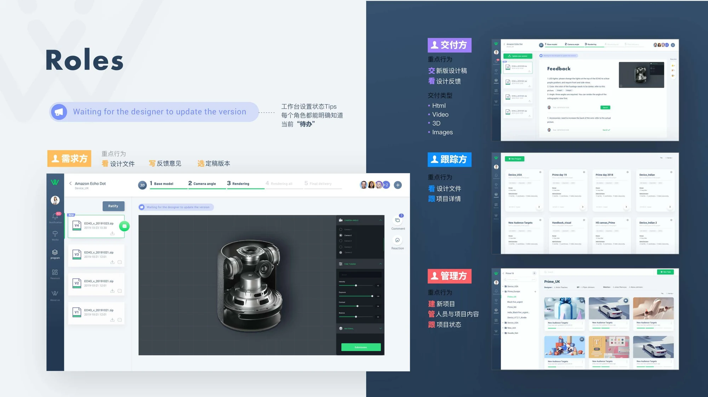
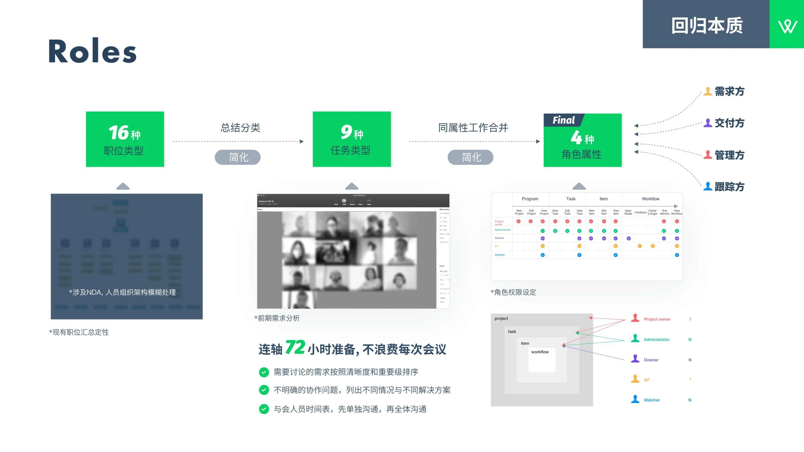
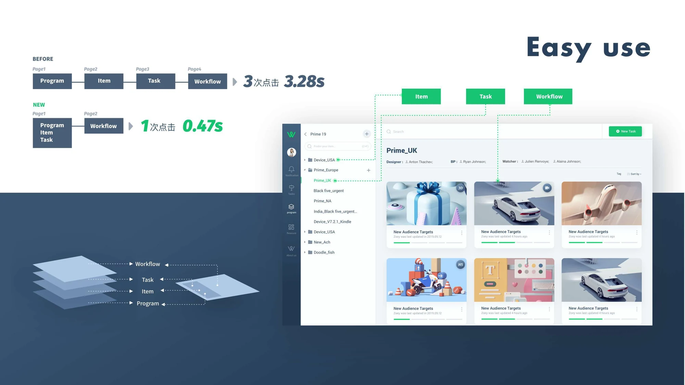
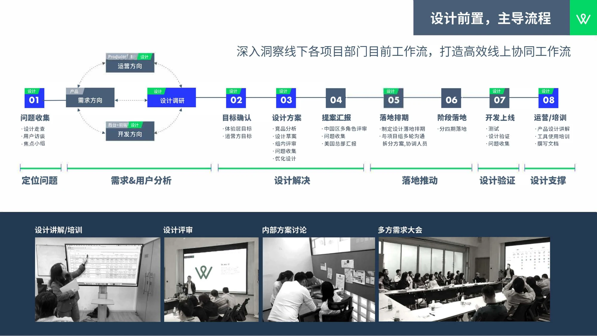

01 / The problem
The work crossed teams. The tools did not.
Creative production involved business partners requesting assets, designers producing them, and managers coordinating delivery. The work moved between roles; the tools only covered parts of the journey.
Wasabi was a new internal collaboration platform intended to connect that journey. My contribution spanned early requirements research, information architecture, interaction and visual design, and implementation support.
I studied offline workflows and observed BPs, designers, and producers. The research focused on what each person needed to do, where hand-offs happened, and how requirements and feedback moved through production. That work led to two organizing decisions: define roles by their actions, and support different production scenarios within one interface framework.
Full project background, research methods & responsibilities
Background & responsibilities
Project background
WASABI is an internal collaboration tool for Amazon, supporting collaboration and project management for designers and requesters such as business partners (BPs). Specialized business needs meant teams had to coordinate across multiple tools, and difficult-to-use tools made teamwork harder. We set out to build a new tool to improve team collaboration efficiency.
Result
Collaboration efficiency in the 3D image raw-data stage increased by 210%. The 3D workflow was shortened from 7 days to 3 days.
Requirements & user analysis
- Use Lark to establish a collaborative team, initiate early alignment meetings, document meeting notes, and manage project timing with Gantt charts and calendars.
- Observe the behavior of BPs, designers, and producers; produce analysis and pain-point reports.
- Use mind-mapping tools to explore requirements. Use the KANO model to identify the most effective core requirements for the first phase, focusing on basic and expected needs. Break down the requirements and propose an actionable plan.
Information architecture
- Use UML (Unified Modeling Language) diagramming tools to draw standard use-case, class, and sequence diagrams.
- Use mind-mapping tools to create the information architecture.
- Use ProcessOn to map key workflows across multiple roles.
Deliverables: 1 designer use case; 1 BP use case; 2 designer workflows; 1 BP master workflow; 1 shared model-library workflow; 1 designer–BP interaction workflow; and more.
Competitive analysis
Analyze collaboration products including Slack, Pitch, InVision, Figma, Lark, Notion, and Lanhu; online 3D product Vectary; and WebGL product Sketchfab. Produce a competitive analysis report.
Brand communication
Logo design, brand strategy, and a brand book.
Interaction design
- Study offline collaboration processes in depth and build the online business logic. Design the product from an overall perspective, explore connections within the workflow, identify pain points, minimize learning costs, and improve the project and workflow experience.
- Optimize multi-role collaboration workflows and interaction design for video, 3D models, and H5 Canvas. Deliver 200+ prototype pages, 50+ interaction-design pages for the resource-sharing platform, and interaction-design documentation.
Visual design
Website design, product interface design, visual design guidelines, developer collaboration, and implementation oversight.
02 / Decision 01
Design around actions, not job titles.
Sixteen job types did not need sixteen different experiences.
I categorized the work into nine task types, then merged work with shared attributes into four roles: requester, deliverer, manager, and watcher. This gave the product a common way to organize actions and permissions across different teams.
Roles · Back to fundamentals
Summarize & categorize
→ Simplify
Merge work with shared attributes
→ Simplify
Requester · Deliverer · Manager · Watcher
For example, a requester needed to view design files, give feedback, and select a final version. A deliverer needed to submit new versions and respond to feedback. A manager created projects and coordinated people; a watcher followed progress. Workspace status tips made each role’s next task explicit.

Requester workspace · Versions, review and next-action status in context
Role research, preparation & permission structure
Roles · Back to fundamentals
Summarize & categorize
→ Simplify
Merge work with shared attributes
→ Simplify
Requester · Deliverer · Manager · Watcher
Existing job classification

Organizational structure blurred due to NDA.
Early requirements analysis
72 hours of continuous preparation. Make every meeting count.
- Sort requirements for discussion by clarity and importance.
- For unclear collaboration issues, list different scenarios and corresponding solutions.
- Plan participant schedules; communicate individually first, then with the full group.
Role permissions
All four roles & original product interfaces
Roles in the workspace
Workspace status tips make the current “to-do” clear to every role.
Requester
Key actions: view design files; write feedback; select the final version.
Deliverer
Key actions: submit new design versions; view design feedback.
Delivery types: HTML, Video, 3D, Images.
Watcher
Key actions: view design files; track project details.
Manager
Key actions: create projects; manage people and project content; track project status.
03 / Decision 02
One framework. Different production flows.
Video, H5, 3D models, and images needed different production steps, while the collaboration structure could stay consistent.
I used scenario analysis to connect the people, actions, timing, and workflow. The shared framework kept project context, progress, member management, versions, status, and feedback in familiar locations, with a main viewing and editing area for the work itself.
The shared interface framework
Video · H5 · 3D Model · Images
The navigation also became shallower. Previously, users moved through Program → Item → Task → Workflow across four pages. The new structure brought Program, Item, and Task together, leaving one step into the workflow.
Easy use
Before
Page 1: Program → Page 2: Item → Page 3: Task → Page 4: Workflow
3 clicks · 3.28s
New
Page 1: Program / Item / Task → Page 2: Workflow
1 click · 0.47s
Program → Item → Task → Workflow

Item · Task · Workflow
Scenario analysis & design rationale
Workflow · Reconstruct the scenario
Advantages
Reduce learning costs.
Reduce switching costs.
Value = (new experience − old experience) − switching costs.
One interface framework supports different types of workflow.
Workflow types: Video · H5 · 3D Model · Images.
04 / Delivery
Carry the design through to launch.
The work continued beyond the interface: aligning teams, planning implementation, reviewing delivery, and supporting adoption.
I worked across product, operations, and engineering, with reviews in China and presentations to US headquarters. The process included implementation scheduling, delivery in four phases, testing and design validation, followed by product explanations, training, and documentation.

The complete eight-step design & delivery process
Design early. Lead the process.
Understand the existing offline workflows across project departments in depth, and build an efficient online collaboration workflow.
Operations direction: Producer / BP / Design
Development direction: Backend + Frontend / Design
- 01 / Design
Collect problems
- Design walkthroughs
- User interviews
- Focus groups
- 02 / Design
Confirm goals
- Experience-level goals
- Operations goals
- 03 / Design
Design solutions
- Competitive analysis
- Design sketches
- Internal design reviews
- Collect issues
- Refine the design
- 04
Present proposals
- Multi-role reviews in China
- Collect issues
- Report to US headquarters
- 05 / Design
Schedule implementation
- Create the design implementation schedule
- Communicate with project teams over multiple rounds; break down solutions and coordinate people
- 06
Deliver in phases
- Implement in four phases
- 07 / Design
Develop & launch
- Testing
- Design validation
- Collect issues
- 08 / Design
Operations & training
- Explain the product design
- Train users to use the tool
- Write documentation
Stages: Identify problems → Requirements & user analysis → Design solutions → Drive implementation → Design validation → Design support.
05 / Results
A launched platform, with clearer measures.
Wasabi brought requests, production, review, and delivery into a shared internal product.
The project materials report a 210% improvement in collaboration efficiency at the 3D image raw-data stage, and a key 3D workflow shortened from seven days to three. These are workflow-level results; the materials shown here do not specify the measurement sample or calculation method.
The navigation comparison records a separate, narrower change: 3 clicks and 3.28 seconds → 1 click and 0.47 seconds. It describes the illustrated path into the workflow, rather than an end-to-end production task. The source does not identify it as an observed user-test average.
My central contribution was the product structure: translating cross-team work into shared roles and a reusable workflow framework, then carrying that structure into web interaction design and delivery.